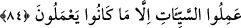
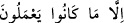

84. Kim bir iyilik getirirse ona bundan daha hayırlı karşılık vardır. Kim bir
kötülük getirirse, o kötülükleri işleyenler, ancak yaptıkları kadar cezâ görürler.
“Kim bir iyilik getirirse ona bundan” zât, sıfat ve kadr (miktar) yönünden “daha
hayırlı karşılık vardır.”
Karşılığın zât itibariyle hayırlı olması bedenle işlenen amellerin cüzlerinde açıkça
görülür. Çünkü ameller ârâz; cüzleri ise cevherlerdir. Mal ile yapılan ibâdet ve ameller
de böyledir. Çünkü dünyanın fânî çekici güzellikleri ile âhiretin bâkî, dâimi ve hakîkî
güzellikleri arasında bir münâsebet yoktur. Karşılığın vasıf itibariyle hayırlı olması ise
onun bâkî olup elem, sıkıntı, keder vb. hâllerden uzak olmasıdır. Karşılığın miktar
itibariyle daha iyi olmasına gelince, ahiret iyiliğinde en az bire on karşılık vardır. Yani,
tek bir iyilik on iyilik ile mükâfatlandırılır. Dolayısıyla biri, yapılan iyiliğin karşılığı,
geriye kalan dokuzu ise Allah’ın kerem ve ihsanındandır. İşte bu dokuz, kendi cinsinden
olan “bir”den daha hayırlıdır.
Bazıları demiştir ki: Buradaki “hasene” marifetullahtır. Ondan daha hayırlı olan ise
rü’yetullahtır. Yahud da hasene, Allah’ın dışındakilerden yüz çevirmedir. Bundan daha
hayırlı olan ise, Hak Teâlâ’nın mevhibe ve lütuflarıdır. Çünkü yüz çevirme (i’râz),
fânîye nisbet edilir ve mahlûkla ilgilidir. Mevhibeler ise Bâkî’ye nisbet edilir ve Kadîm
ile ilgilidir.
“Kim” şirk, riya, cehalet vb. “bir kötülük getirirse, o kötülükleri işleyenler, ancak
yaptıkları kadar cezâ görürler.”
“ (o kötülükleri işleyenler)” ifâdesinde fâilin zamir olarak değil de
“kötülükleri işleyenler” şeklinde açıkça zikredilmiş olması, diğer bir ifâdeyle
“kötülük” kelimesinin iki defa tekrar edilmesi, hallerinin ne kadar kötü olduğuna dikkat
çekmek içindir. Bunun faydası, akıl sâhiplerini bu kötülükleri işlemekten daha fazla
sakındırmaktır.
Dine ve akla kötü gelen şeyi
Akıllı olan kimse yapmaz.
“ (ancak yaptıkları kadar)” ifâdesinin aslı, “ (ancak
yaptıklarının misli kadar)”dır. (yaptıkları) ifâdesinde muzaf konumunda olan “
kelimesi hazfedilmiş ve yerine, yapılan kötülük ile verilen cezânın birebir aynı
olduğunu mübalağalı bir şekilde ifâde etmek için “ancak yaptıkları kadar” ifâdesi
getirilmiştir.